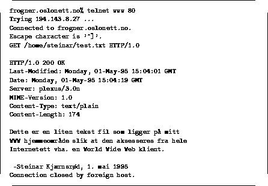

Dette er den vanligste kommandoen, og brukes for å hente et vilkårlig
objekt i tjeneren. Figur 3 viser hvordan GET kommandoen kan utføres
via en vanlig telnet sesjon mot en HTTP tjener. I eksempelet brukes
GET til å hente en liten tekst fil. Legg merke til informasjonen HTTP
tjeneren sender tilbake gjennom de forskjellige headerne.